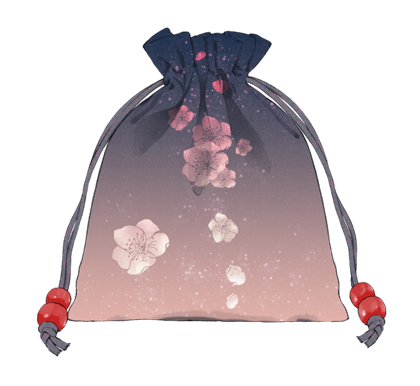

吉
礼
礼

《周礼·春官·宗伯》记载：吉礼为敬奉神与鬼的典礼，祭祀对象分为人鬼、天神、地示等三类。主要有祭天地、祭日月星辰、祭先王、祭先祖、祭社稷、祭宗庙等礼仪活动。是华夏的最高礼仪。祭服包括六冕以及爵弁。士助祭爵弁服，自家祭服玄端。


《周礼·春官·宗伯》记载：吉礼为敬奉神与鬼的典礼，祭祀对象分为人鬼、天神、地示等三类。主要有祭天地、祭日月星辰、祭先王、祭先祖、祭社稷、祭宗庙等礼仪活动。是华夏的最高礼仪。祭服包括六冕以及爵弁。士助祭爵弁服，自家祭服玄端。